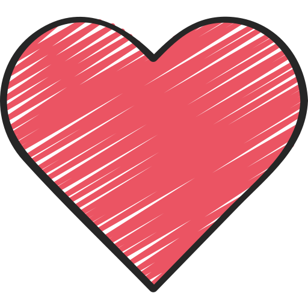
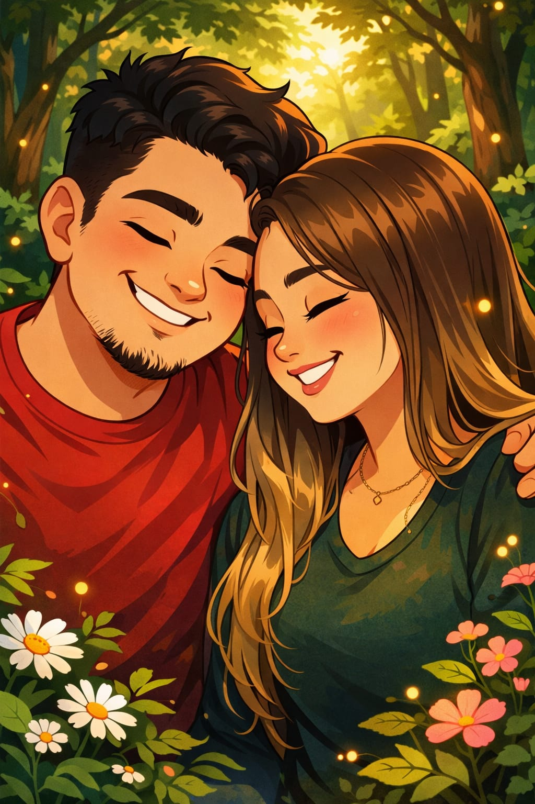

Para Amanda
Tentei fazer algo especial...
Isso foi a coisa mais improvisada que eu já te dei além de risadas, e piadas ruins KKKKK, é só para te dizer que meu sentimento por ti apenas cresce desde aquele dia 16 de julho, quando te vi entrando no carro com aquela blusa cinza já sabia que seria dificil esquecer, desde então tu é a mulher que eu penso todos os dias, que me motiva e que me faz sentir cada melhor e mais vivo, eu tenho certeza do que eu quero contigo, e isso é uma carta aberta para o mundo, qualquer um pode ver, tu vai ser minha mulher, eu quero cuidar de ti, te proteger, eu te amo Amanda.
